赞助商

Copyright Wehaha.com Rights Reserved. 闽ICP备12016244号 |
Powered by DollarFans.com财迷一般会找自己想要的新闻来评析，很少迎合热点或者爆款新闻。但是这次的爆款新闻也确实值得解毒，比如约翰牛脱欧，财迷决定就此为大家解毒一下：
约翰牛脱欧现在当然是乾坤定矣。
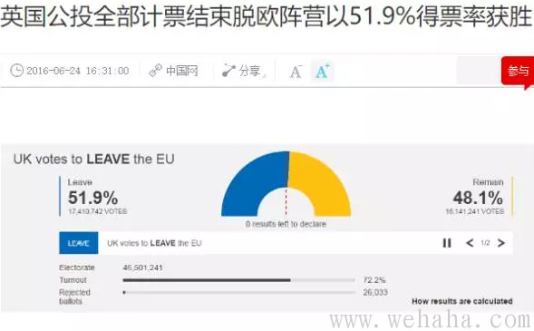
但说实话，连财迷也没想到变化如此之迅，剧情反转如此之快，刚议员被刺还说民调留欧优先，结果投票结果出来还是脱欧派优先。看来民调这东东也不好使啊。
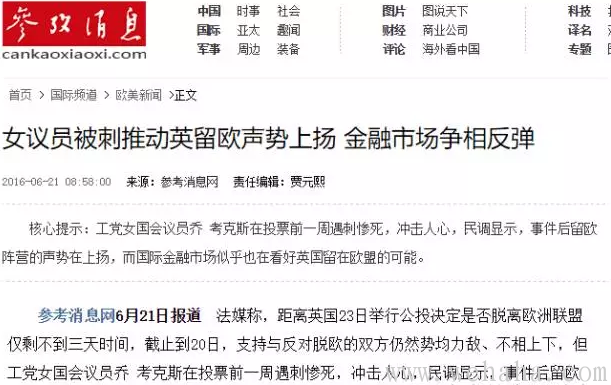
所以问题来了：英国脱了欧，那究竟属于哪个洲的？还有小卡哥，既不会搞统一战线，也没有搞好党的建设，导致小作坊主们吃瓜群众获胜。可怜小卡还没有某地老爷那么厚的脸皮，居然辞职了，实在令人扼腕。
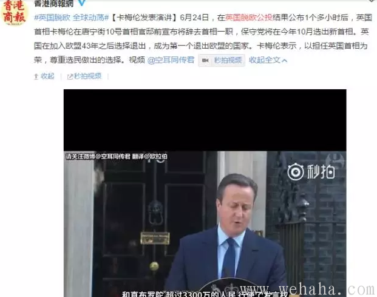
不少人，尤其是自干们，都说香江李财主这回要吃瘪，算了吧，下面这个信息可以让你了解自己还是tooyoungtoosimple了：
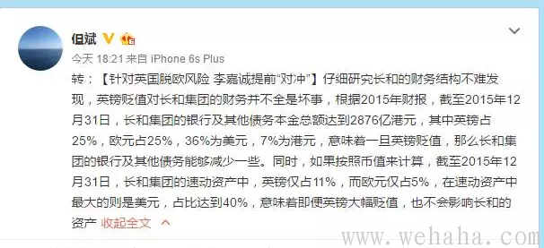
还有，财迷一直不解的是舆论为何对万里之外的一个岛国的投票这么热衷？国社AV们也推波助澜，以至于大家都忘了就在自己的国土上，在江苏盐城，有近百同胞倒在了龙卷风和冰雹之中。一群没有投票权的太监们去当别人行房事的围观吃瓜群众，却忘了自己同袍倒在血泊之中。财迷我表示呵呵。
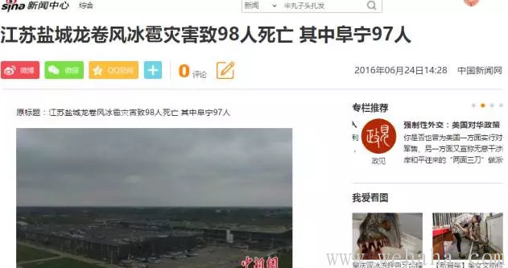
以前是爱情来得太快就像龙卷风。现在是龙卷风来得太快让人不再相信爱情。
某地气象局被爆出只知道辟（kong）谣(he)。民众都来不及准备。一看就是惯有的官僚主义，懒政堕政，推责任捂盖子。结果搞出黑天鹅事件，死伤上百。蔷国特色，倒霉的是草民。
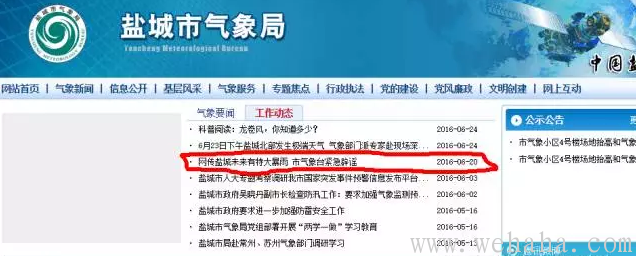
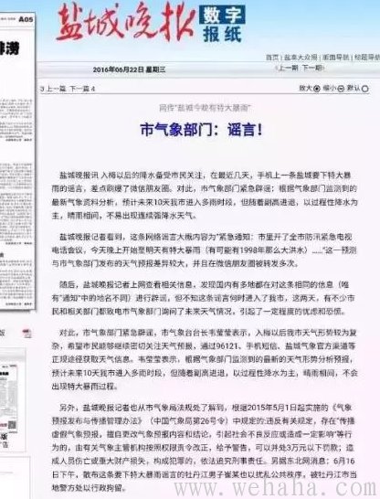
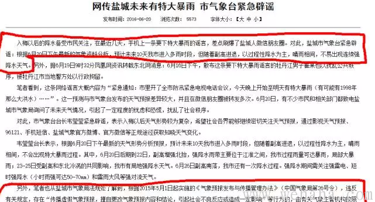
脱欧与雹灾，是财迷解毒的起点。它们看似没有联系，财迷以为是有的。它们之间的联系是：脱欧是一群人面对庞然大物在算计经济成本后采取的行动，而雹灾在一定程度上可以说是另一群人因为庞然大物而付出的经济和生命的代价。
这次脱欧，蔷国媒体大都说是民粹的胜利，财迷只好笑而不语。财迷以为这其实是算计的结果。英伦三岛上哪来那么多民粹吃瓜群众，大多数都是小作坊主和商人们好不好。这些人一向贼精，算盘打得叮当响，你说他们会晕了头搞民粹，那简直太低估他们了。
财迷做这样假设，基于两个理由：其一是传统。大不列颠一向奉行孤立主义和大陆均势政策。以前是在大陆各种进行平衡，法国强则联俄、普抗法（拿破仑战争），俄国强则联法抗俄（克里米亚战争），德国强则联法俄抗德（一战、二战）。二战后苏俄复兴，一度占有了半个欧洲。于是德法扛鼎，以比荷卢森的煤钢联盟为基础，联合西欧一票小国建立共同体，后来还搞了欧盟，一来对抗毛熊。同时也希望降低内部关税成本。英国一看，对抗毛熊是当务之急，于是赶紧跑来助阵。后来苏俄崩盘，东欧豹变，北约和欧盟都在东扩，早期东扩成员，比如捷克、匈牙利，本来就是中欧经济重镇，经济基础好又有自由经济传统，西欧大哥们稍微提携一下，立马咸鱼翻生，老树焕发第二春。而后来的国家，比如波兰、罗马尼亚以及南斯拉夫脱出来的波黑、克罗地亚等等，要么长期被毛熊蹂躏污染，要么本就是传统的斯拉夫（slavery）国家，没有自由经济传统，经济不够好，政治也不够开放，入了欧盟也经常向大哥伸手要福利，拖累了德法英等经济强国。在那个时候英国因为在内部做不了欧盟旗手（德法视欧盟为禁脔，不会轻易许以外人），外面也要为新加入的东欧小弟输血，早已腹诽甚多。后来西班牙葡萄牙希腊一干国家大搞疗养院模式经济低迷。再后来默大妈为首的德国人认了死理，高举人权旗帜，对绿教徒和叙利亚难民开了方便之门，结果搞得自己家里鸡飞狗跳。英国人看了，更是觉得呆在欧盟疗养院还要让绿教进来捣乱，简直亏大了。更形象讲，就是那个微信群发红包的段子，现在已经传开了。
其二，在欧盟里面无非关税低，工作机会会多一些，但是即使脱了欧盟，关税也可以协商的。别的利益都还好说，其代价要比留在欧盟小得多。且脱了，如果到时候欧盟又搞好了，还可以再入的。英伦三岛的后裔们连亚投行的小便宜都要来沾光一下，节操早就没有了，何况脱欧的馅饼会更大？民族国家这种概念在英国人眼中简直不值一提，人家只想把自己生活过好而已。只有苏俄和其他国家这种长期有大帝国思维的统治者，才会为了面子把勤奋的俄罗斯人赚到的钱拿去分给高加索和中亚各个穷小弟，然而小弟还是吵闹着分了家，搞得自己里外不是人。（此处有删节）
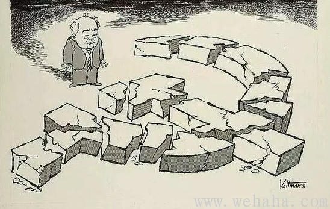
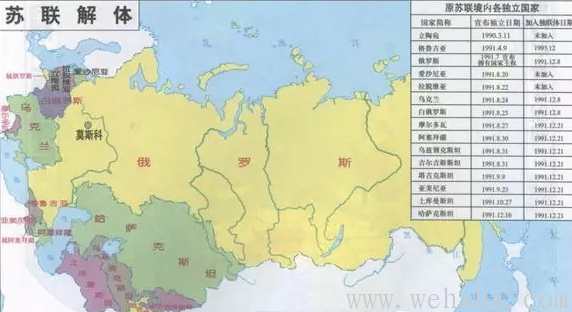
扯远了，财迷想说的是，其实国家经济和公司一样，一旦出现大帝国，也必然出现大企业病。什么冗员啊，信息传递和回应缓慢啊，推卸责任和内斗啊都是必然的，远远不及松散的联邦制国家，产权清晰，内部权责明确可以激励创新，外部适当联合可吃垄断红利。这也是为啥现在很多大企业也开始在内部搞什么阿米巴经营模式一类的东西，赋予一个个项目组极大的自主权力，让这些小团队专攻一个个项目，同时也出鼓励机制让各个团队多劳多得。张小龙的微信就是这样搞出来的。这其实就是一种企业内的联邦自治制度。这与山姆大叔、汉斯和约翰牛们的政治制度背后的逻辑其实一脉相承：通过明晰产权来激励劳动创新，降低交易成本。这样，内部人为了小钱钱workhard,有了钱不用帮穷小弟而去playhard。玩好了大家才能爽歪歪，才想要进一步想建设好国家经济。如此则良性循环，最后建成一个百世流芳的大企业或者大帝国也未可知。至于东亚日韩中港台的同胞们长期经历了另一种zhuanzhi帝国的slavery,只懂得干活建设国家不懂得玩乐，也能建设好国家经济，那简直是个异数。你看现在进入发达国家地区行列的日韩港台不也都讲小确幸，先玩乐再说了么？这也算一种矫枉过正吧。实际上至少在经济领域，日本人还是奉行产权明晰的阿米巴模式的：
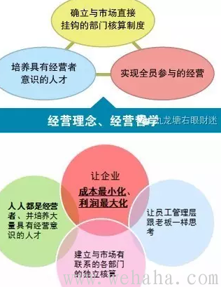
回过头来，无论大企业还是大帝国，最麻烦的就是信息传递和回应迟缓。如今信息化社会，事态瞬息万变。市场变化也大，即使你针对之前市场的信息作出了正确决策，等层层传达下去执行，恐怕都晚了，何况很多大企业和大帝国还会有对人不对事的内斗导致的错误决策。更何况还会有各种即使你掌握了充分信息迅速应对仍难以对付的黑天鹅事件。这次江苏冰雹，一不小心应对不力就是成百伤亡。如果出现更大的黑天鹅事件，恐怕真的就要考验庞然大物的反应力和执行力了。首先人家能不能及时反应过来都是问题，其次能反应过来，恐怕也有可能“让领导先走”。。。（此处有删节）
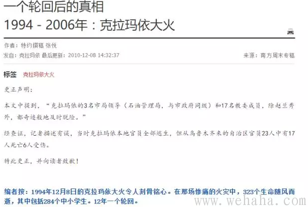
那么作为普通人，我们面对各种黑天鹅以及这庞然大物带来的低效，该如何应对？
1、首先，出现黑天鹅事件，并非不可能，你看脱欧公投都会剧情反转，而江苏冰雹也是迅雷不及老爷掩耳盗铃。我们不幸身在一个庞然大物之中，其结构臃肿（1978年80人养一个公务员，到现在25人养一个公务员），其反应估计也不会很快，何况还可能有“领导先走”。所以万一有黑天鹅，靠天靠地不如靠自己。尤其是是那些在族群冲突高发地区和经济低迷无所事事者众且治安不良的地区的读者，该准备的东西，是一定要准备的。别的不说，屯点东西以备停水断电是必要的。
2、财迷建群和大家互通信息，就是为了方便大家降低信息不对称带来的交易成本，迅速获得市场信息并迅速进行反应。这不，英镑降到这样低，正好抄底。而且英国一脱欧，我反而看多英国，因为脱出来了产权明晰，且少了拖累，经济说不定经济会稳中有增，最后英镑又会升起来，所以这正是买入英镑好时机，大家有闲钱可以试试。尤其是那些已经配置了美元的读者，有闲钱不妨换点英镑放着。大家应该看空的是欧元，可惜国内似乎不能做空欧元，不然也值得一做。
3、我们要知道，别人的迟缓说不定是我们的机会。国内很多大国企搞不起来就是因为各种反应慢、推诿和内斗。事业单位和国企内部人士往往思维有定势，也缺乏冒险精神。在这些地方读者应该认识到这些，嗅觉灵敏点，staysharp。哪些在没落行业国企的读者，该转型早点转型，该抓住机会就要抓住机会。不要随大流，不要看周围。你转型得早，等别人回过神来你已经过河上岸了，这个时候你就可以回头笑看千军万马挤独木桥了。
3、如果你亲人朋友在英国可以做代购，那就爽歪歪咯。目测各种英国代购会火啊。想起了俄罗斯经济大跌的时候俄国商场奢侈品被抄底的盛况。这次目测不会那么跌得凶猛，但也是有一点小机会的。
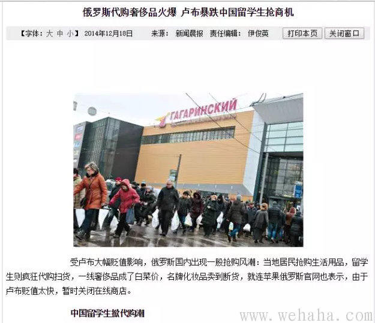
4、我们要知道，别人的迟缓说不定是我们的机会。国内很多大国企搞不起来就是因为各种反应慢、推诿和内斗。事业单位和国企内部人士往往思维有定势，也缺乏冒险精神。在这些地方读者应该认识到这些，嗅觉灵敏点，staysharp。哪些在没落行业国企的读者，该转型早点转型，该抓住机会就要抓住机会。不要随大流，不要看周围。你转型得早，等别人回过神来你已经过河上岸了，这个时候你就可以回头笑看千军万马挤独木桥了。更何况，你早点从不景气的庞然大物中跳出来了，手上要是有点米，回去抄底挣点小钱钱也是可以有的。
愿各位读了本文能将庞然大物的低效放在心上，愿各位面对那只黑天鹅时早有准备。


Copyright Wehaha.com Rights Reserved. 闽ICP备12016244号 |
Powered by DollarFans.com
发表评论